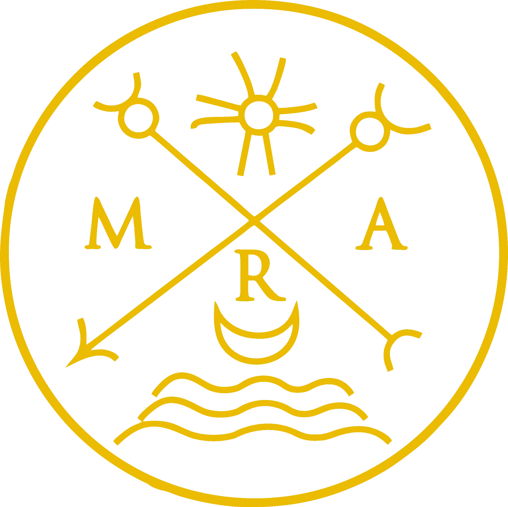

BEGIN HIER
Snelle gids door cursussen, seminars, boeken en trajecten.

Inhoud, seminars en trajecten voor wie zich met helderheid wil oriënteren, ernstig wil verdiepen en dit werk op een geordende manier wil benaderen.
Van ons komt alles voort, tot ons keert alles terug.
Seminars, trajecten, boeken en besloten inhoud samengebracht in één ruimte, ontworpen om elke fase van de studie te begeleiden: van de eerste benadering tot een diepere en meer voortdurende verdieping.
Inleidende bijeenkomsten, thematische seminars en geselecteerde opnamen die helder toegang geven tot de centrale thema’s van het werk.
Gestructureerde studietrajecten voor wie continuïteit, methode en een diepere oriëntatie binnen de eigen weg zoekt.
Boeken, gedrukte edities en ebooks om de studie ook individueel voort te zetten, in eigen tempo en ritme.
Materialen, verdiepingen en bronnen die beschikbaar zijn in het besloten deel van de site, voor een rijkere raadplegingservaring.
Kies een duidelijke ingang. De site is rijk, maar je hoeft niet alles tegelijk te verkennen.
Snelle gids door cursussen, seminars, boeken en trajecten.
Een redactionele kaart die cursussen, seminars, boeken en artikelen verbindt.
Zoek cursussen, seminars, boeken, artikelen en pagina’s.
Thematische toegang via symbolen, praktijken en studiegebieden.
Niet alles hoeft in één keer te worden aangepakt. De beste manier om te beginnen is je eenvoudig te oriënteren, te begrijpen welke inhoud het best past bij je huidige moment en de eerste stap helder te kiezen. We hebben de essentiële verwijzingen verzameld om je te helpen onderscheiden tussen seminars, trajecten, publicaties en besloten materialen.
Hier vind je de uitgelichte afspraken van Academy MRA. De data worden regelmatig bijgewerkt: om bevestiging, organisatorische details of aanwijzingen over het traject dat het best bij je past te ontvangen, kun je rechtstreeks contact met ons opnemen.
Een bijeenkomst gewijd aan de presentatie van een centraal thema van de Science of Ammonia, ook bedoeld voor wie een eerste oriëntatie zoekt.
Een moment van verdieping voor wie het werk op een meer continue en immersieve manier wil voortzetten.
De Science of Ammonia biedt een eerste oriëntatie aan wie de behoefte voelt aan een taal, een vorm en een richting waardoor men kennis kan benaderen.
Zij presenteert zich niet als een gesloten systeem, maar als een eerste steun: zij helpt beter te begrijpen, duidelijker te onderscheiden en zich voor te bereiden op een geleidelijke overstijging van paradigma’s.
Daarom vormt zij een kostbaar toegangspunt voor wie de roep tot studie voelt en met meer orde, aanwezigheid en bewustzijn wil beginnen.
Een selectie van redactionele verdiepingen gewijd aan de centrale thema’s van het werk van Academy MRA. Teksten ontworpen voor een tragere, aandachtigere en geleidelijke lezing.
Een redactionele verdieping gewijd aan het thema van de heilige tijd, ontworpen om een heldere, sobere en immersieve leeservaring te begeleiden.
Een redactionele pagina gewijd aan symbolen en aanwezigheid, opgebouwd om lange teksten en verwante materialen beter tot hun recht te laten komen.
Een verdieping ontworpen voor lange teksten, herlezing en besloten materialen die verbonden zijn met de studietrajecten.